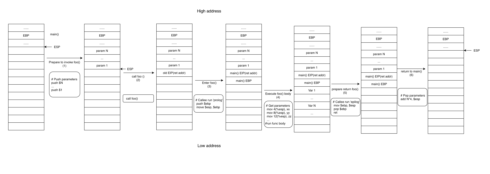
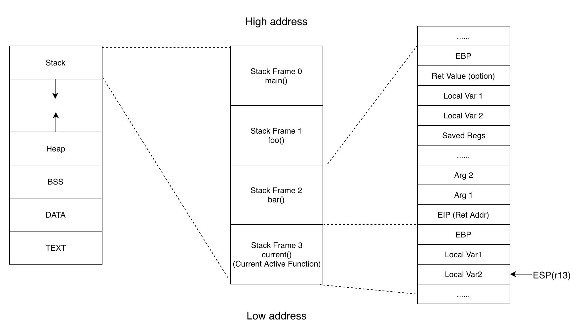
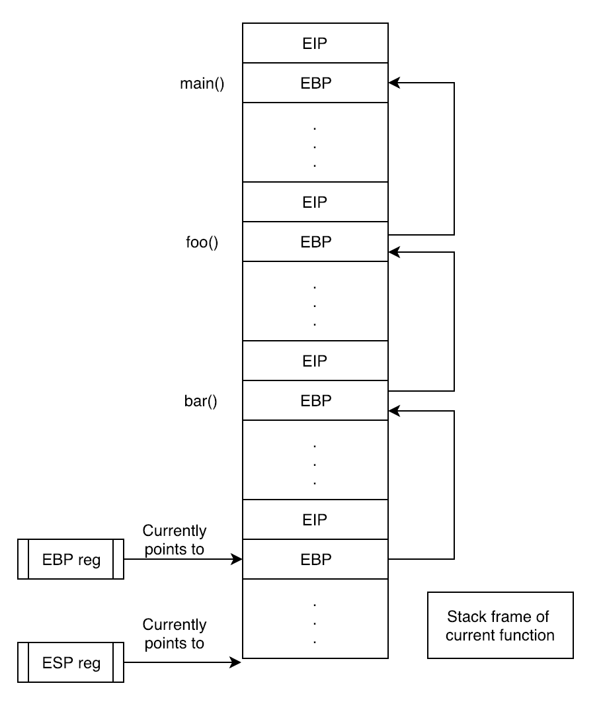
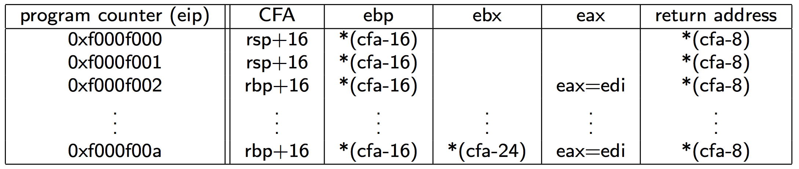
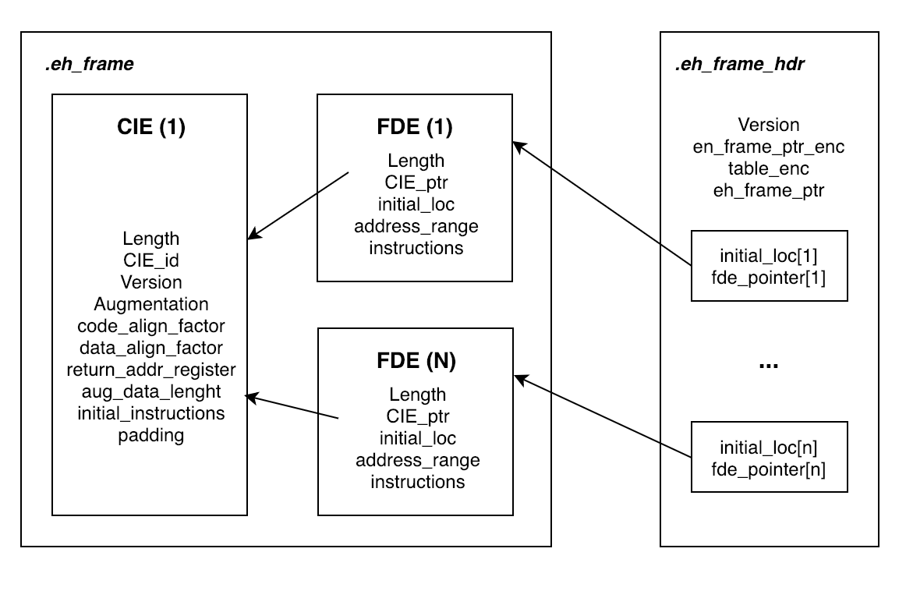

<!doctype html><html lang="zh-CN"><head><meta charset="utf-8"><meta name="viewport" content="width=device-width,initial-scale=1"><meta name="description" content="Native下如何获取调用栈？"><title>Native下如何获取调用栈？ · Android 开发高手课</title><link rel="stylesheet" href="assets/style.css"></head><body>
<div class="reading-progress"></div><aside class="sidebar"><a class="brand" href="index.html"><span class="brand-mark">A</span><span><b>Android</b><small>由表及里，给你的 App“把把脉”</small></span></a><label class="search"><span>⌕</span><input id="lesson-search" type="search" placeholder="搜索章节" aria-label="搜索章节"></label><nav><section class="nav-section"><h2>开篇词<span>1</span></h2><div class="nav-lessons"><a href="android-mastery-chapter-01-01.html" class="" data-title="开篇词丨焦虑的移动开发者该如何破局？"><span>01</span><em>开篇词丨焦虑的移动开发者该如何破局？</em></a></div></section><section class="nav-section"><h2>导读<span>1</span></h2><div class="nav-lessons"><a href="android-mastery-chapter-02-01.html" class="" data-title="导读丨如何打造高质量的应用？"><span>02</span><em>导读丨如何打造高质量的应用？</em></a></div></section><section class="nav-section"><h2>模块一 高质量开发<span>25</span></h2><div class="nav-lessons"><a href="android-mastery-chapter-03-01.html" class="" data-title="崩溃优化（上）：关于“崩溃”那些事儿"><span>03</span><em>崩溃优化（上）：关于“崩溃”那些事儿</em></a><a href="android-mastery-chapter-03-02.html" class="" data-title="崩溃优化（下）：应用崩溃了，你应该如何去分析？"><span>04</span><em>崩溃优化（下）：应用崩溃了，你应该如何去分析？</em></a><a href="android-mastery-chapter-03-03.html" class="" data-title="内存优化（上）：4gb内存时代，再谈内存优化"><span>05</span><em>内存优化（上）：4GB内存时代，再谈内存优化</em></a><a href="android-mastery-chapter-03-04.html" class="" data-title="内存优化（下）：内存优化这件事，应该从哪里着手？"><span>06</span><em>内存优化（下）：内存优化这件事，应该从哪里着手？</em></a><a href="android-mastery-chapter-03-05.html" class="" data-title="卡顿优化（上）：你要掌握的卡顿分析方法"><span>07</span><em>卡顿优化（上）：你要掌握的卡顿分析方法</em></a><a href="android-mastery-chapter-03-06.html" class="" data-title="卡顿优化（下）：如何监控应用卡顿？"><span>08</span><em>卡顿优化（下）：如何监控应用卡顿？</em></a><a href="android-mastery-chapter-03-07.html" class="" data-title="补充篇丨卡顿优化：卡顿现场与卡顿分析"><span>09</span><em>补充篇丨卡顿优化：卡顿现场与卡顿分析</em></a><a href="android-mastery-chapter-03-08.html" class="" data-title="启动优化（上）：从启动过程看启动速度优化"><span>10</span><em>启动优化（上）：从启动过程看启动速度优化</em></a><a href="android-mastery-chapter-03-09.html" class="" data-title="启动优化（下）：优化启动速度的进阶方法"><span>11</span><em>启动优化（下）：优化启动速度的进阶方法</em></a><a href="android-mastery-chapter-03-10.html" class="" data-title="i-o优化（上）：开发工程师必备的i-o优化知识"><span>12</span><em>I-O优化（上）：开发工程师必备的I-O优化知识</em></a><a href="android-mastery-chapter-03-11.html" class="" data-title="i-o优化（中）：不同i-o方式的使用场景是什么？"><span>13</span><em>I-O优化（中）：不同I-O方式的使用场景是什么？</em></a><a href="android-mastery-chapter-03-12.html" class="" data-title="i-o优化（下）：如何监控线上i-o操作？"><span>14</span><em>I-O优化（下）：如何监控线上I-O操作？</em></a><a href="android-mastery-chapter-03-13.html" class="" data-title="存储优化（上）：常见的数据存储方法有哪些？"><span>15</span><em>存储优化（上）：常见的数据存储方法有哪些？</em></a><a href="android-mastery-chapter-03-14.html" class="" data-title="存储优化（中）：如何优化数据存储？"><span>16</span><em>存储优化（中）：如何优化数据存储？</em></a><a href="android-mastery-chapter-03-15.html" class="" data-title="存储优化（下）：数据库sqlite的使用和优化"><span>17</span><em>存储优化（下）：数据库SQLite的使用和优化</em></a><a href="android-mastery-chapter-03-16.html" class="" data-title="网络优化（上）：移动开发工程师必备的网络优化知识"><span>18</span><em>网络优化（上）：移动开发工程师必备的网络优化知识</em></a><a href="android-mastery-chapter-03-17.html" class="" data-title="网络优化（中）：复杂多变的移动网络该如何优化？"><span>19</span><em>网络优化（中）：复杂多变的移动网络该如何优化？</em></a><a href="android-mastery-chapter-03-18.html" class="" data-title="网络优化（下）：大数据下网络该如何监控？"><span>20</span><em>网络优化（下）：大数据下网络该如何监控？</em></a><a href="android-mastery-chapter-03-19.html" class="" data-title="耗电优化（上）：从电量优化的演进看耗电分析"><span>21</span><em>耗电优化（上）：从电量优化的演进看耗电分析</em></a><a href="android-mastery-chapter-03-20.html" class="" data-title="耗电优化（下）：耗电的优化方法与线上监控"><span>22</span><em>耗电优化（下）：耗电的优化方法与线上监控</em></a><a href="android-mastery-chapter-03-21.html" class="" data-title="ui 优化（上）：ui 渲染的几个关键概念"><span>23</span><em>UI 优化（上）：UI 渲染的几个关键概念</em></a><a href="android-mastery-chapter-03-22.html" class="" data-title="ui 优化（下）：如何优化 ui 渲染？"><span>24</span><em>UI 优化（下）：如何优化 UI 渲染？</em></a><a href="android-mastery-chapter-03-23.html" class="" data-title="包体积优化（上）：如何减少安装包大小？"><span>25</span><em>包体积优化（上）：如何减少安装包大小？</em></a><a href="android-mastery-chapter-03-24.html" class="" data-title="包体积优化（下）：资源优化的进阶实践"><span>26</span><em>包体积优化（下）：资源优化的进阶实践</em></a><a href="android-mastery-chapter-03-25.html" class="" data-title="想成为android高手，你需要先搞定这三个问题"><span>27</span><em>想成为Android高手，你需要先搞定这三个问题</em></a></div></section><section class="nav-section"><h2>模块二 高效开发<span>9</span></h2><div class="nav-lessons"><a href="android-mastery-chapter-04-01.html" class="" data-title="如何提升组织与个人的研发效能？"><span>28</span><em>如何提升组织与个人的研发效能？</em></a><a href="android-mastery-chapter-04-02.html" class="" data-title="关于编译，你需要了解什么？"><span>29</span><em>关于编译，你需要了解什么？</em></a><a href="android-mastery-chapter-04-03.html" class="" data-title="编译插桩的三种方法：aspectj、asm、redex"><span>30</span><em>编译插桩的三种方法：AspectJ、ASM、ReDex</em></a><a href="android-mastery-chapter-04-04.html" class="" data-title="大数据与ai，如何高效地测试？"><span>31</span><em>大数据与AI，如何高效地测试？</em></a><a href="android-mastery-chapter-04-05.html" class="" data-title="从每月到每天，如何给版本发布提速？"><span>32</span><em>从每月到每天，如何给版本发布提速？</em></a><a href="android-mastery-chapter-04-06.html" class="" data-title="数据评估（上）：如何实现高可用的上报组件？"><span>33</span><em>数据评估（上）：如何实现高可用的上报组件？</em></a><a href="android-mastery-chapter-04-07.html" class="" data-title="数据评估（下）：什么是大数据平台？"><span>34</span><em>数据评估（下）：什么是大数据平台？</em></a><a href="android-mastery-chapter-04-08.html" class="" data-title="线上疑难问题该如何排查和跟踪？"><span>35</span><em>线上疑难问题该如何排查和跟踪？</em></a><a href="android-mastery-chapter-04-09.html" class="" data-title="做一名有高度的移动开发工程师"><span>36</span><em>做一名有高度的移动开发工程师</em></a></div></section><section class="nav-section"><h2>模块三 架构演进<span>9</span></h2><div class="nav-lessons"><a href="android-mastery-chapter-05-01.html" class="" data-title="聊聊重构：优秀的架构都是演进而来的"><span>37</span><em>聊聊重构：优秀的架构都是演进而来的</em></a><a href="android-mastery-chapter-05-02.html" class="" data-title="native hook 技术，天使还是魔鬼？"><span>38</span><em>Native Hook 技术，天使还是魔鬼？</em></a><a href="android-mastery-chapter-05-03.html" class="" data-title="跨平台开发的现状与应用"><span>39</span><em>跨平台开发的现状与应用</em></a><a href="android-mastery-chapter-05-04.html" class="" data-title="移动开发新大陆：工作三年半，移动开发转型手游开发"><span>40</span><em>移动开发新大陆：工作三年半，移动开发转型手游开发</em></a><a href="android-mastery-chapter-05-05.html" class="" data-title="移动开发新大陆：android音视频开发"><span>41</span><em>移动开发新大陆：Android音视频开发</em></a><a href="android-mastery-chapter-05-06.html" class="" data-title="移动开发新大陆： 边缘智能计算的趋势"><span>42</span><em>移动开发新大陆： 边缘智能计算的趋势</em></a><a href="android-mastery-chapter-05-07.html" class="" data-title="动态化实践，如何选择适合自己的方案？"><span>43</span><em>动态化实践，如何选择适合自己的方案？</em></a><a href="android-mastery-chapter-05-08.html" class="" data-title="聊聊flutter，面对层出不穷的新技术该如何跟进？"><span>44</span><em>聊聊Flutter，面对层出不穷的新技术该如何跟进？</em></a><a href="android-mastery-chapter-05-09.html" class="" data-title="android开发高手课学习心得"><span>45</span><em>Android开发高手课学习心得</em></a></div></section><section class="nav-section"><h2>练习Sample跑起来<span>8</span></h2><div class="nav-lessons"><a href="android-mastery-chapter-06-01.html" class="" data-title="练习sample跑起来丨热点问题答疑第1期"><span>46</span><em>练习Sample跑起来丨热点问题答疑第1期</em></a><a href="android-mastery-chapter-06-02.html" class="" data-title="练习sample跑起来丨热点问题答疑第2期"><span>47</span><em>练习Sample跑起来丨热点问题答疑第2期</em></a><a href="android-mastery-chapter-06-03.html" class="" data-title="练习sample跑起来丨热点问题答疑第3期"><span>48</span><em>练习Sample跑起来丨热点问题答疑第3期</em></a><a href="android-mastery-chapter-06-04.html" class="" data-title="练习sample跑起来丨热点问题答疑第4期"><span>49</span><em>练习Sample跑起来丨热点问题答疑第4期</em></a><a href="android-mastery-chapter-06-05.html" class="" data-title="练习sample跑起来丨唯鹿同学的练习手记 第1辑"><span>50</span><em>练习Sample跑起来丨唯鹿同学的练习手记 第1辑</em></a><a href="android-mastery-chapter-06-06.html" class="" data-title="练习sample跑起来丨唯鹿同学的练习手记 第2辑"><span>51</span><em>练习Sample跑起来丨唯鹿同学的练习手记 第2辑</em></a><a href="android-mastery-chapter-06-07.html" class="" data-title="练习sample跑起来丨唯鹿同学的练习手记 第3辑"><span>52</span><em>练习Sample跑起来丨唯鹿同学的练习手记 第3辑</em></a><a href="android-mastery-chapter-06-08.html" class="" data-title="练习sample跑起来丨asm插桩强化练习"><span>53</span><em>练习Sample跑起来丨ASM插桩强化练习</em></a></div></section><section class="nav-section"><h2>特别放送<span>7</span></h2><div class="nav-lessons"><a href="android-mastery-chapter-07-01.html" class="" data-title="专栏学得苦？可能是方法没找对"><span>54</span><em>专栏学得苦？可能是方法没找对</em></a><a href="android-mastery-chapter-07-02.html" class="" data-title="专栏学得苦？可能你还需要一份配套学习书单"><span>55</span><em>专栏学得苦？可能你还需要一份配套学习书单</em></a><a href="android-mastery-chapter-07-03.html" class="" data-title="聊聊framework的学习方法"><span>56</span><em>聊聊Framework的学习方法</em></a><a href="android-mastery-chapter-07-04.html" class="active" data-title="native下如何获取调用栈？"><span>57</span><em>Native下如何获取调用栈？</em></a><a href="android-mastery-chapter-07-05.html" class="" data-title="android jvm ti机制详解（内含福利彩蛋）"><span>58</span><em>Android JVM TI机制详解（内含福利彩蛋）</em></a><a href="android-mastery-chapter-07-06.html" class="" data-title="android工程师的“面试指南”"><span>59</span><em>Android工程师的“面试指南”</em></a><a href="android-mastery-chapter-07-07.html" class="" data-title="程序员修炼之路丨设计能力的提升途径"><span>60</span><em>程序员修炼之路丨设计能力的提升途径</em></a></div></section><section class="nav-section"><h2>结束语<span>1</span></h2><div class="nav-lessons"><a href="android-mastery-chapter-08-01.html" class="" data-title="结束语丨移动开发的今天和明天"><span>61</span><em>结束语丨移动开发的今天和明天</em></a></div></section></nav><footer><span class="status-dot"></span>离线教程 · 61 章</footer></aside>
<button class="menu-button" type="button" aria-label="打开章节目录" aria-expanded="false">☰</button><button class="scrim" type="button" aria-label="关闭章节目录"></button>
<main><div class="topline"><span>特别放送</span><span>第 57 / 61 章</span></div><article class="lesson"><header class="lesson-header"><p class="eyebrow">ANDROID MASTERY · LESSON 57</p><h1>Native下如何获取调用栈？</h1><div class="meta"><span>张绍文</span><span>2019-02-02</span><span>约 10 分钟</span></div></header>
<div class="article-content"><div><p>你好，我是 simsun，曾在微信从事 Android 开发，也是开源爱好者、Rust 语言“铁粉”。应绍文邀请，很高兴可以在“高手课”里和你分享一些编译方面的底层知识。</p><p>当我们在调试 Native 崩溃或者在做 profiling 的时候是十分依赖 backtrace 的，高质量的 backtrace 可以大大减少我们修复崩溃的时间。但你是否了解系统是如何生成 backtrace 的呢？今天我们就来探索一下 backtrace 背后的故事。</p><p>下面是一个常见的 Native 崩溃。通常崩溃本身并没有任何 backtrace 信息，可以直接获得的就是当前寄存器的值，但显然 backtrace 才是能够帮助我们修复 Bug 的关键。</p><pre><code>pid: 4637, tid: 4637, name: crasher &gt;&gt;&gt; crasher &lt;&lt;&lt;signal 6 (SIGABRT), code -6 (SI_TKILL), fault addr --------Abort message: 'some_file.c:123: some_function: assertion "false" failed' r0 00000000 r1 0000121d r2 00000006 r3 00000008 r4 0000121d r5 0000121d r6 ffb44a1c r7 0000010c r8 00000000 r9 00000000 r10 00000000 r11 00000000 ip ffb44c20 sp ffb44a08 lr eace2b0b pc eace2b16backtrace: #00 pc 0001cb16 /system/lib/libc.so (abort+57) #01 pc 0001cd8f /system/lib/libc.so (__assert2+22) #02 pc 00001531 /system/bin/crasher (do_action+764) #03 pc 00002301 /system/bin/crasher (main+68) #04 pc 0008a809 /system/lib/libc.so (__libc_init+48) #05 pc 00001097 /system/bin/crasher (_start_main+38)</code></pre><p>在阅读后面的内容之前，你可以先给自己 2 分钟时间，思考一下系统是如何生成 backtrace 的呢？我们通常把生成 backtrace 的过程叫作 unwind，unwind 看似和我们平时开发并没有什么关系，但其实很多功能都是依赖 unwind 的。举个例子，比如你要绘制火焰图或者是在崩溃发生时得到 backtrace，都需要依赖 unwind。</p><h2>书本中的 unwind</h2><p><strong>1. 函数调用过程</strong></p><p>如果你在大学时期修过汇编原理这门课程，相信你会对下面的内容还有印象。下图就是一个非常标准的函数调用的过程。</p><!-- [[[read_end]]] --><p></p><ul>
<li>
<p>首先假设我们处于函数 main() 并准备调用函数 foo()，调用方会按倒序压入参数。此时第一个参数会在调用栈栈顶。</p>
</li>
<li>
<p>调用 invoke foo() 伪指令，压入当前寄存器 EIP 的值到栈，然后载入函数 foo() 的地址到 EIP。</p>
</li>
<li>
<p>此时，由于我们已经更改了 EIP 的值（为 foo() 的地址），相当于我们已经进入了函数 foo()。在执行一个函数之前，编译器都会给每个函数写一段序言（prologue），这里会压入旧的 EBP 值，并赋予当前 EBP 和 ESP 新的值，从而形成新的一个函数栈。</p>
</li>
<li>
<p>下一步就行执行函数 foo() 本身的代码了。</p>
</li>
<li>
<p>结束执行函数 foo() 并准备返回，这里编译器也会给每个函数插入一段尾声（epilogue）用于恢复调用方的 ESP 和 EBP 来重建之前函数的栈和恢复寄存器。</p>
</li>
<li>
<p>执行返回指令（ret），被调用函数的尾声（epilogue）已经恢复了 EBP 和 ESP，然后我们可以从被恢复的栈中依次 pop 出 EIP、所有的参数以及被暂存的寄存器的值。</p>
</li>
</ul><p>读到这里，相信如果没有学过汇编原理的同学肯定会有一些懵，我来解释一下上面提到的寄存器缩写的具体含义，上述命名均使用了 x86 的命名方式。讲这些是希望你对函数调用有一个初步的理解，其中有很多细节在不同体系结构、不同编译器上的行为都有所区别，所以请你放松心情，跟我一起继续向后看。</p><blockquote>
<p>EBP：基址指针寄存器，指向栈帧的底部。<br>
在 ARM 体系结构中，R11（ARM code）或者 R7（Thumb code）起到了类似的作用。在 ARM64 中，此寄存器为 X29。<br>
ESP：栈指针寄存器，指向栈帧的栈顶 ， 在 ARM 下寄存器为 R13。<br>
EIP：指令寄存器，存储的是 CPU 下次要执行的指令的地址，ARM 下为 PC，寄存器为 R15。</p>
</blockquote><p><strong>2. 恢复调用帧</strong></p><p>如果我们把上述过程缩小，站在更高一层视角去看，所有的函数调用栈都会形成调用帧（stack frame），每一个帧中都保存了足够的信息可以恢复调用函数的栈帧。</p><p></p><p>我们这里忽略掉其他不相关的细节，重点关注一下 EBP、ESP 和 EIP。你可以看到 EBP 和 ESP 分别指向执行函数栈的栈底和栈顶。每次函数调用都会保存 EBP 和 EIP 用于在返回时恢复函数栈帧。这里所有被保存的 EBP 就像一个链表指针，不断地指向调用函数的 EBP。 这样我们就可以此为线索，十分优雅地恢复整个调用栈。</p><p></p><p>这里我们可以用下面的伪代码来恢复调用栈：</p><pre><code>void debugger::print_backtrace() { auto curr_func = get_func_from_pc(get_pc()); output_frame(curr_func); auto frame_pointer = get_register_value(m_pid, reg::rbp); auto return_address = read_mem(frame_pointer+8); while (dwarf::at_name(curr_func) != "main") { curr_func = get_func_from_pc(ret_addr); output_frame(curr_func); frame_pointer = read_mem(frame_pointer); return_address = read_mem(frame_pointer+8); }</code></pre><p>但是在 ARM 体系结构中，出于性能的考虑，天才的开发者为了节约 R7/R11 寄存器，使其可以作为通用寄存器来使用，因此无法保证保存足够的信息来形成上述调用栈的（即使你向编译器传入了“-fno-omit-frame-pointer”）。比如下面两种情况，ARM 就会不遵循一般意义上的序言（prologue），感兴趣的同学可以具体查看<a href="https://www.cl.cam.ac.uk/~fms27/teaching/2001-02/arm-project/02-sort/apcs.txt#1018">APCS Doc</a>。</p><ul>
<li>
<p>函数为叶函数，即在函数体内再没有任何函数调用。</p>
</li>
<li>
<p>函数体非常小。</p>
</li>
</ul><h2>Android 中的 unwind</h2><p>我们知道大部分 Android 手机使用的都是 ARM 体系结构，那在 Android 中需要如何进行 unwind 呢？我们需要分两种情况分别讨论。</p><p><strong>1. Debug 版本 unwind</strong></p><p>如果是 Debug 版本，我们可以通过“.debug_frame”（有兴趣的同学可以了解一下<a href="http://www.dwarfstd.org/doc/DWARF4.pdf">DWARF</a>）来帮助我们进行 unwind。这种方法十分高效也十分准确，但缺点是调试信息本身很大，甚至会比程序段（.TEXT 段）更大，所以我们是无法在 Release 版本中包含这个信息的。</p><blockquote>
<p>DWARF 是一种标准调试信息格式。DWARF 最早与 ELF 文件格式一起设计, 但 DWARF 本身是独立的一种对象文件格式。本身 DAWRF 和 ELF 的名字并没有任何意义（侏儒、精灵，是不是像魔兽世界的角色 :)），后续为了方便宣传，才命名为 Debugging With Attributed Record Formats。引自<a href="https://en.wikipedia.org/wiki/DWARF#cite_note-eager-1">wiki</a></p>
</blockquote><p><strong>2. Release 版本 unwind</strong></p><p>对于 Release 版本，系统使用了一种类似“.debug_frame”的段落，是更加紧凑的方法，我们可以称之为 unwind table，具体来说在 x86 和 ARM64 平台上是“.eh_frame”和“.eh_frame_hdr”，在 ARM32 平台上为“.ARM.extab”和“.ARM.exidx”。</p><p>由于 ARM32 的标准早于 DWARF 的方法，所有 ARM 使用了自己的实现，不过它们的原理十分接近，后续我们只讨论“.eh_frame”，如果你对 ARM32 的实现特别感兴趣，可以参考<a href="https://sourceware.org/binutils/docs/as/ARM-Unwinding-Tutorial.html">ARM-Unwinding-Tutorial</a>。</p><p>“.eh_frame section”也是遵循 DWARF 的格式的，但 DWARF 本身十分琐碎也十分复杂，这里我们就不深入进去了，只涉及一些比较浅显的内容，你只需要了解 DAWRF 使用了一个被称为 DI（Debugging Information Entry）的数据结构，去表示每个变量、变量类型和函数等在 debug 程序时需要用到的内容。</p><p>“.eh_frame”使用了一种很聪明的方法构成了一个非常大的表，表中包含了每个程序段的地址对应的相应寄存器的值以及返回地址等相关信息，下面就是这张表的示例（你可以使用<code>readelf --debug-dump=frames-interp</code>去查看相应的信息，Release 版中会精简一些信息，但所有帮助我们 unwind 的寄存器信息都会被保留）。</p><p></p><p>“.eh_frame section”至少包含了一个 CFI（Call Frame Information）。每个 CFI 都包含了两个条目：独立的 CIE（Common Information Entry）和至少一个 FDE（Frame Description Entry）。通常来讲 CFI 都对应一个对象文件，FDE 则描述一个函数。</p><p>“<a href="https://refspecs.linuxfoundation.org/LSB_1.3.0/gLSB/gLSB/ehframehdr.html">.eh_frame_hdr</a> section”包含了一系列属性，除了一些基础的 meta 信息，还包含了一列有序信息（初始地址，指向“.eh_frame”中 FDE 的指针），这些信息按照 function 排序，从而可以使用二分查找加速搜索。</p><p></p><h2>总结</h2><p>总的来说，unwind 第一个栈帧是最难的，由于 ARM 无法保证会压基址指针寄存器（EBP）进栈，所以我们需要借助一些额外的信息（.eh_frame）来帮助我们得到相应的基址指针寄存器的值。即使如此，生产环境还是会有各种栈破坏，所以还是有许多工作需要做，比如不同的调试器（GDB、LLDB）或者 breakpad 都实现了一些搜索算法去寻找潜在的栈帧，这里我们就不展开讨论了，感兴趣的同学可以查阅相关代码。</p><h2>扩展阅读</h2><p>下面给你一些外部链接，你可以阅读 GCC 中实现 unwind 的关键函数，有兴趣的同学可以在调试器中实现自己的 unwinder。</p><ul>
<li>
<p><a href="https://gcc.gnu.org/git/gitweb.cgi?p=gcc.git;a=blob;f=libgcc/unwind.inc;h=12f62bca7335f3738fb723f00b1175493ef46345;hb=HEAD#l275">_Unwind_Backtrace</a></p>
</li>
<li>
<p><a href="https://gcc.gnu.org/git/gitweb.cgi?p=gcc.git;a=blob;f=libgcc/unwind-dw2.c;h=b262fd9f5b92e2d0ea4f0e65152927de0290fcbd;hb=HEAD#l1222">uw_frame_state_for</a></p>
</li>
<li>
<p><a href="https://gcc.gnu.org/git/gitweb.cgi?p=gcc.git;a=blob;f=libgcc/unwind-dw2.c;h=b262fd9f5b92e2d0ea4f0e65152927de0290fcbd;hb=HEAD#l1494">uw_update_context</a></p>
</li>
<li>
<p><a href="https://gcc.gnu.org/git/gitweb.cgi?p=gcc.git;a=blob;f=libgcc/unwind-dw2.c;h=b262fd9f5b92e2d0ea4f0e65152927de0290fcbd;hb=HEAD#l1376">uw_update_context_1</a></p>
</li>
</ul></div></div><nav class="pager" aria-label="章节导航"><a href="android-mastery-chapter-07-03.html"><small>← 上一章</small><strong>聊聊Framework的学习方法</strong></a><a class="next" href="android-mastery-chapter-07-05.html"><small>下一章 →</small><strong>Android JVM TI机制详解（内含福利彩蛋）</strong></a></nav>
<section class="comments"><header><div><p class="eyebrow">COMMUNITY NOTES</p><h2>读者评论</h2></div><span>2 条</span></header><article class="comment"><div class="avatar">山</div><div class="comment-body"><header><strong>山鬼</strong><span>2019-02-03</span><span class="likes">♡ 1</span></header><p>春节依然继续学习。之前老师讲崩溃优化的时候尝试对native的崩溃进行了捕获，使用的系统提供的uwind工具，当时觉得比较难得在于打印出对应的java堆栈。现在对uwind的原理又了解了一下，但感觉这篇教程的信息量少了些。</p></div></article><article class="comment"><div class="avatar">G</div><div class="comment-body"><header><strong>Geek_Yasin...</strong><span>2019-03-28</span></header><p>请问这里的方法可以用于获取非崩溃情况下其他线程的native堆栈吗？对于卡顿的分析，除了Simpleperf ，如果想或许线上的native执行情况，是否只能对指定的函数进行GOTHOOK?</p></div></article></section></article></main><button class="back-to-top" type="button" aria-label="回到顶部">↑</button><script src="assets/app.js"></script></body></html>